仁者之勇
照亮黑區
連警察都不敢單獨進去的地方，志工為什麼要走進去？

先別急著下結論，讀完再說說你的想法～
這一篇講沙巴斗湖的甘榜狄丁岸：一個被叫做「黑區」的貧民區，居民超過一萬五千人，其中約一萬人沒有合法身分。
慈濟從一場大火開始走進去，後來辦了學習中心和義診。你也會認識一位掉下橋三次的志工，和一位把讀書名額讓給弟妹的少女。
下面是原書的節錄，紅色底線是我們替你標出的轉折點。
讀之前：走進一個危險的地方幫人，你覺得最需要什麼？
眾人聞之怯步的地方
甘榜狄丁岸是什麼樣的地方？慈濟怎樣走進去？閱讀引導
大部分的甘榜狄丁岸居民生活困頓，由於沒有合法身分，工作不穩定，且無法享有政府提供的教育及醫療服務。當地更有吸毒、走私等社會問題，亦曾發生警察入內辦案慘遭殺害的事件，是眾人聞之怯步，犯罪率甚高的「黑區」。

大家都不敢進去！
慈濟志工秉持「無緣大慈，同體大悲」的胸懷，提起信心、毅力與勇氣，勇敢走進黑區，為暗角的居民注入一股希望。
2003年10月，甘榜狄丁岸的木屋區發生大火，許多居民的家園遭受火噬，慈濟志工前往勘災，隨即展開第一次物資發放。

讓慈濟走了進去。
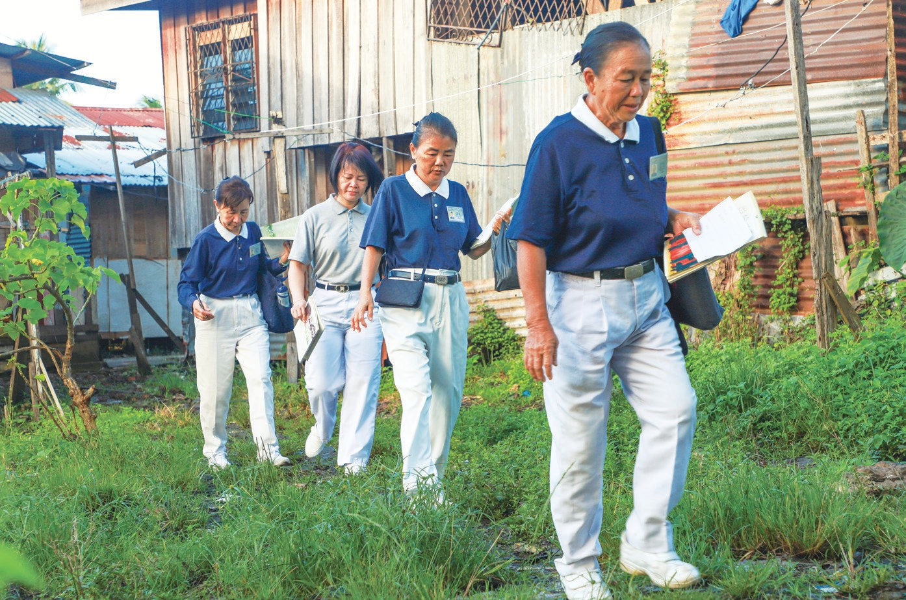
猜一猜閱讀引導
2013年，志工在黑區挨家挨戶募心募款。短短26天內，有多少位居民響應？
「居民生活貧困，常說沒有錢可以捐做善事，所以我們去募心募款的時候，都告訴他們捐款多少不重要，重要的是發一分善念。……」
斗湖聯絡處負責人羅珍愛表示・p.159為什麼救外國人？
黑區的孩子不能上學，志工決定辦一間學習中心，卻有人質疑。閱讀引導
發現當地家庭普遍有七到八位小孩，孩子因無法就學，平日遊蕩行乞，或到菜市場兜售塑料袋、紙巾包等。
「要改變他們的人生就要從教育開始。」
簡慈露表示・p.159「慈濟辦學的目的是讓沒有能力的人、沒有國籍的人可以求學，我很支持。有的孩子甚至還會吸毒，所以我們要讓孩子們懂得哪些事情能做，哪些不能做。」
鄉村發展及治安委員會主席阿布巴卡表示・p.160有一次志工問起早已超過就學年齡的阿妮莎想上學嗎？她點點頭，隨之流下眼淚，原本在一旁還微笑的弟弟也跟著拭淚。
「我們沒有辦法讀書，我很心疼弟妹們只能撿拾玻璃瓶賺錢……」
阿妮莎說・p.161
她就哭了……
由於當地居民沒有合法身分，不便遠離住所，以免遭到拘捕扣留，因此學習中心必須就近尋找場地。
仍有人質疑「為什麼本地人不救，救外國人？」
「……如果現在不走出第一步來幫助他們，孩子們的未來就完全沒有希望了。」
羅珍愛表示・p.161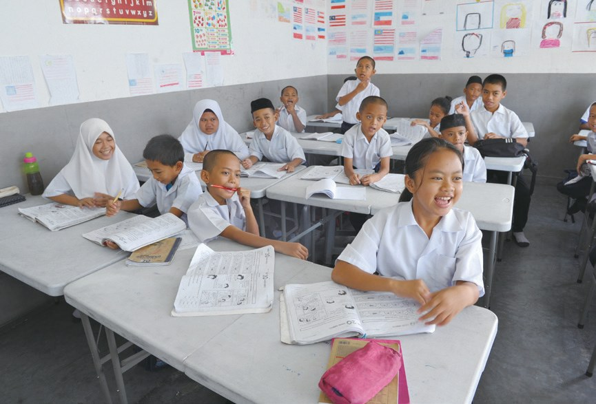
從 A 寫到 Z
學習中心開學了，孩子們變了什麼？閱讀引導
雖然早上八點才上課，但孩子們清晨六點就穿上慈濟制服，背起書包，在學習中心門外排隊。
六點就來排隊了！
「愛，是從自己散發出來的。我相信我們不用多說，孩子們也會感覺得到。」
志工梅寶蓮說・p.162「學習中心剛啟用時，有些學生年齡已經很大，但他們連從A寫到Z都沒辦法；剛開始的前兩個月，我其實是講課講到聲音沙啞的。」
學習中心教師努魯說・p.163孩子們從一開始一字不識、上課吵鬧，到隔年，年級測驗成績已達到一般一年級的水準。14歲的阿布杜在學會了寫字及基本加減法後，學習中心樓下的商店老闆便僱用他放學後到店內打工。

阿布杜的生活有什麼改變？
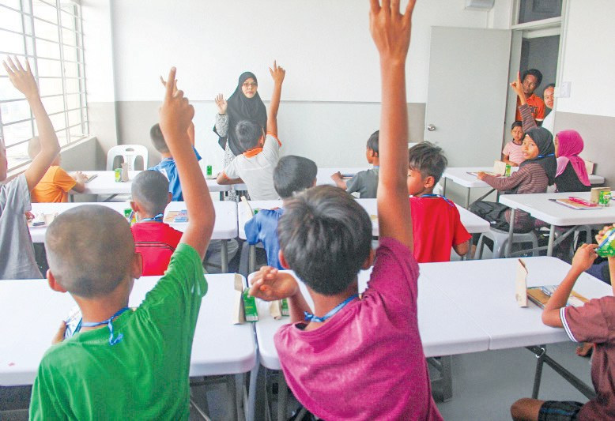
「普天下沒有我不愛的人，普天下沒有我不信任的人，普天之下沒有我不原諒的人……」
志工李俞伶教孩子們唱〈普天三無〉・p.164「每當孩子們起爭執時，我就會說你忘了師姑教的〈普天三無〉嗎？孩子們就會主動說對不起，不只變得比較容易原諒別人，也會認錯……」
奴哈雅老師表示・p.165吵架就變少了！
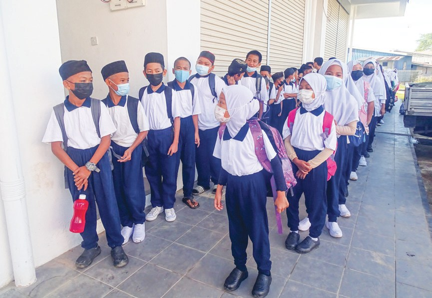
2022年9月12日，沙巴斗湖狄丁岸學習中心搬遷新址，正式開學。新校舍有9個單位的空間，能容納近兩百位無國籍兒童上學。
學習中心搬了新家以後，狄丁岸的孩子們過得怎樣？
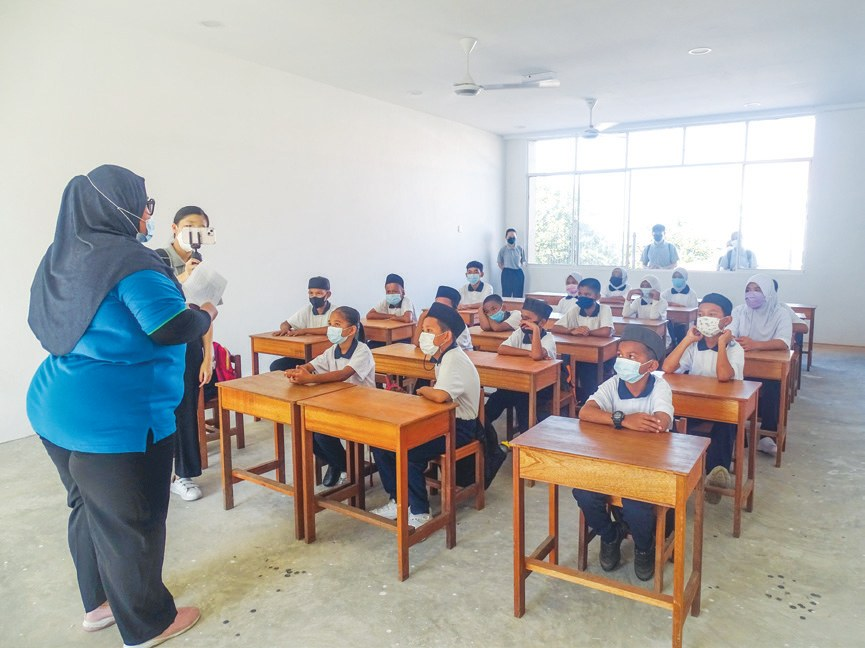
推著水泥車來看病
醫院太貴，居民生病了怎麼辦？閱讀引導
醫院雖有提供非公民醫療服務，但費用高昂。
居住在甘榜狄丁岸長達二十八年的安娜，父親兩個月前中風但沒錢就醫。此次義診，安娜和丈夫莫哈默推著厚板水泥車，載著行動不便的父親前來看診……
推爸爸來看病……
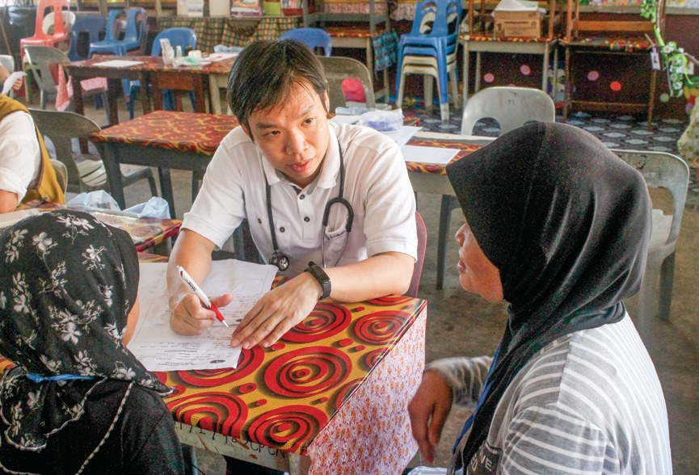
校長認為，慈濟雖是佛教團體，卻願意為不同宗教、種族的村民免費看診，讓他深受感動，希望善的循環能綿綿不絕。
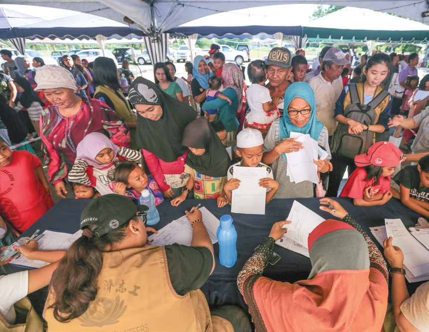
「我現在很輕鬆，謝謝慈濟和醫生，讓窮人可以來看病。」
切除粉瘤後，毛利達說・p.170- 356位2015年首次義診p.167
- 735位2016年第二次義診p.169
- 2,776人次2017年兩天大型義診p.170
曾是慈濟照顧戶的菈蒂法，放下理髮院的生意來協助義剪。

現在來幫大家剪頭髮！
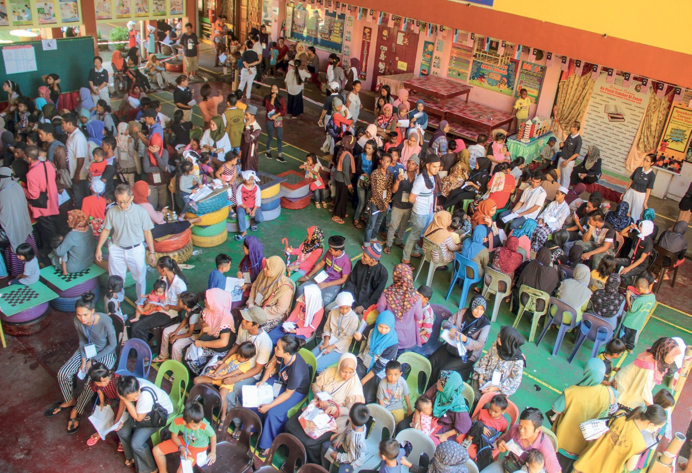
「加入國際慈濟人醫會後，責任更大，福田也更多。我想要回饋自己長大的土地，為更多的鄉親服務。」
斗湖首位加入人醫會的藥劑師張富祥說・p.172掉下橋三次
一位面對過菜刀的志工，和一位把名額讓給弟妹的少女。閱讀引導
「那個地方沒有人要去，甚至連警察也不敢單獨行動，至少兩、三個人結伴，才敢進去。」
志工關寶檢說・p.172有位男子怒氣衝衝地跑來，站在關寶檢前面，手裡拿著一把菜刀，大聲地以馬來語質問：「妳們來這裡做什麼？」
她怎麼辦？
「我們來自一個慈善團體，叫慈濟，我們是來幫助你們的。你認得我們的制服嗎？你們每次火災，我們都有進來幫忙啊！」
關寶檢冷靜下來回答・p.173白色的褲子轉眼變成黑褲，關寶檢本來要找水清洗，但想到村民太過窮苦，喝的水是需要用買的，所以她忍著髒臭繼續家訪。
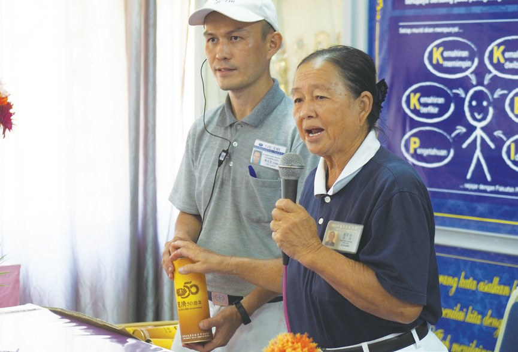
「行菩薩道，若不走進最黑暗的地方，如何幫助真正苦難的人？」
落橋三次之後，關寶檢表示・p.174琪琪的世界，只有從住家到學習中心這個範圍而已，她很想讀書，希望能走出她的小小世界，但為了弟弟妹妹的未來，她把就學的名額讓給他們。
卻讓給了弟妹……
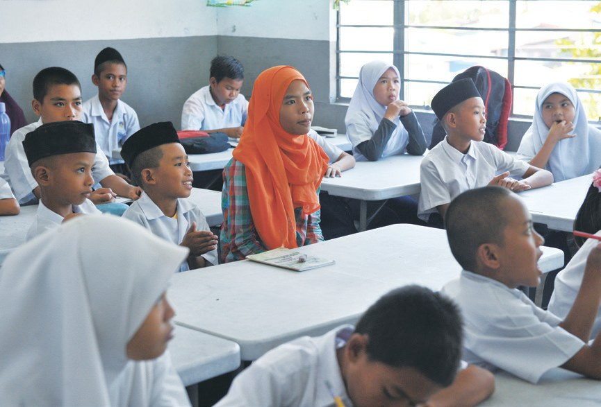
簡陋的木屋，沒有桌椅和床鋪，唯一的衣櫥也是學習中心捐給他們的。屋頂有許多破洞，破爛的板牆暫時用布擋住，全家人常得在雨中挨著過夜。
「琪琪跟我說，有一次下了很大的雨，他們來不及逃去清真寺避雨，幾個孩子整晚就躲在衣櫥，度過害怕的一晚。」
志工陳文忠說・p.175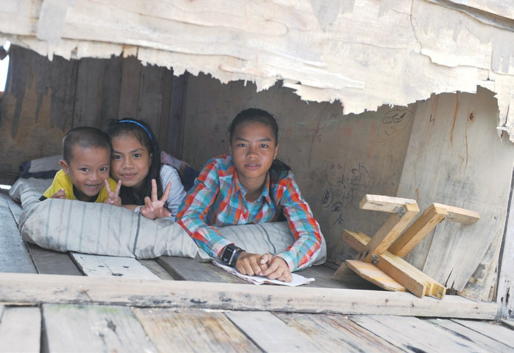
成了躲雨的地方。
勇敢走入「黑區」，在最黑暗的地方點燈，讓「黑區」變「亮點」，這是最真實的人間菩薩行。
原文・p.176停一停：誰讓你記住了？閱讀引導
選一位你印象最深的人。沒有標準答案。
有人面對菜刀，有人把名額讓出去，有人放下生意來幫忙。哪一位讓你最有感覺？

一起回頭看看吧～
回望
依本章原文整理，每一條都標了原書頁碼。閱讀引導
背後原因
為什麼要在黑區辦學

小川已經有發放和義診，為什麼還要辦學？
- 沒有身分
無法享有政府提供的教育及醫療服務。p.157
- 遊蕩行乞
孩子因無法就學，平日遊蕩行乞。p.159
- 辦學習中心
上人說，唯有教育才能真正翻轉人生。p.176
後續發展
狄丁岸一路走來

小禾從第一場大火，到學習中心搬新家，走了多久？
- 2003
木屋區大火，第一次物資發放。p.157
- 2012
首次頒發新芽助學金，54位孩子受惠。p.159
- 2013
26天內，2,126位居民響應募心募款。p.158
- 2015
首次義診，嘉惠356位居民。p.167
- 2017
學習中心開學；首次大型義診。p.162、p.169
- 2022
學習中心搬遷新址。p.165
黑區的孩子
以前和後來
小川進了學習中心，孩子們變了什麼？
- 遊蕩行乞、賣塑料袋清晨六點排隊上學p.159、p.162
- 連A到Z都寫不出達到一般一年級的水準p.163
- 一字不識阿布杜放學後到商店打工p.163
- 起爭執會主動說對不起p.165
以上只整理本章寫到的事；書裡沒寫到的，我們不替它下結論。
回頭看讀前的選擇閱讀引導
關寶檢面對菜刀，靠的是村民認得慈濟的制服（p.173）；學習中心找阿布巴卡做橋樑（p.160）；上人讚許的是「仁者之勇」（p.176）。勇氣、方法、信任，你覺得哪一樣最先？
她自己的書，還能讀嗎？
只有你自己看得到喔！
準備好了就一起出發～